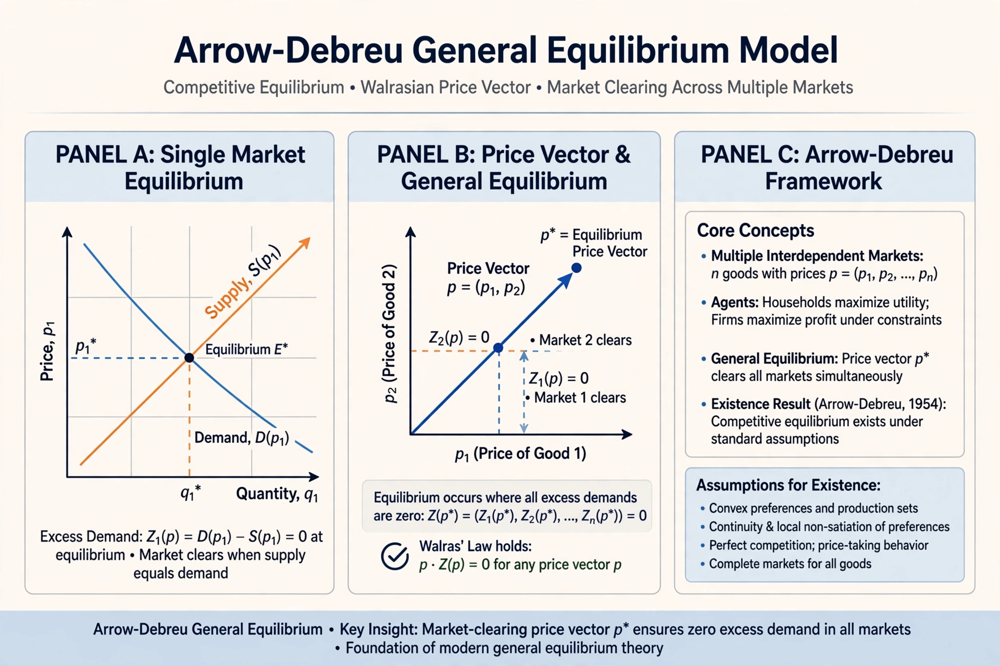

The Arrow–Debreu model is a foundational model of general economic equilibrium in mathematical economics, developed by Kenneth Arrow and Gérard Debreu (with related work by Lionel McKenzie) in 1954. It proves, under stated assumptions, that a competitive equilibrium exists for an economy with complete markets.

Agents have initial endowments and preferences over commodities, which are distinguished by physical characteristics, location, date and state of the world — so contingent contracts cover future uncertainty. Firms choose production plans to maximise profit at given prices. Using fixed-point theorems (Kakutani/Brouwer), Arrow and Debreu showed there is a price vector at which supply equals demand in every market simultaneously.
The work underpins the two fundamental theorems of welfare economics: every competitive equilibrium is Pareto efficient, and any Pareto-efficient allocation can be achieved as an equilibrium with suitable transfers, given convexity assumptions. It earned both authors major honours — Arrow shared the 1972 Nobel Memorial Prize and Debreu won it in 1983. Critics note the model's unrealistic assumptions, including complete markets and perfect information.